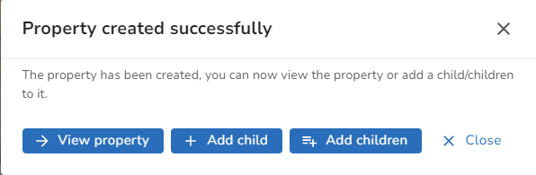

If you select Add property you will see a selection of Templates which have been previously created by an Administrator.
•Pick the template that most resembles the type of property you wish to create. If you wish to discover more information on any of the entries in the template then please see the relevant topics under the Property Form details.
•First you will be asked to complete the Address details where the PAO (either PAO no or description) and Street information are mandatory.
Notes:
oIf you are a Welsh authority then you may click the Welsh tab and amend any of the details.
oIf you are a Scottish authority and wish to add a Gaelic address then you need to first check the Create Gaelic record box. This will display a Gaelic tab where you may enter the Gaelic details.
•When you are happy click Next.
•Next the Property details are displayed. To change anything click on the BLPU, LPI or Other boxes, make your selections and click Done when finished or Cancel to return to the Property details without changing anything. Some of the LPI details such as Post Town and Postcode should be selected from the list provided as these are configured by an Administrator in the Lookup tables. If you are an Administrator you will also be able to add a new Lookup at this point as an Add icon is displayed if you click in the box e.g.

When you are happy with the Property details click Next. If any of the information is invalid you will see an exclamation mark. Click in the box and you will see more information on what needs correcting.
•Now you may add any Cross references for the property. Click on the  to display the Add cross reference dialog. Pick the Source and enter the Cross Reference and click Done when finished or Cancel to return to the Cross references without changing anything. Note: If the template you have selected automatically adds a Cross Reference then you will just need to click on an entry and enter the Cross Reference as the Source will have been already selected. If you do not want to add this particular Cross Reference then hover over the entry and click the Delete icon. Click Next to place your property on the map.
to display the Add cross reference dialog. Pick the Source and enter the Cross Reference and click Done when finished or Cancel to return to the Cross references without changing anything. Note: If the template you have selected automatically adds a Cross Reference then you will just need to click on an entry and enter the Cross Reference as the Source will have been already selected. If you do not want to add this particular Cross Reference then hover over the entry and click the Delete icon. Click Next to place your property on the map.
Note: If you don't want to add any Cross references you can click Skip to proceed directly to the Map placement.
•A map is displayed. Click on the map to place the property. You can drag the map if you need to move it or use the + - buttons at the bottom left to Zoom in or out respectively. You may also use the scroll bar on your mouse to Zoom in and out. When you are happy that you have positioned your property click Finish to create the property.
•You will see the following dialog:

•You can choose to View the property, add a child or a range of children or just Close the dialog.
Note: If at any point during the process you wish to go back and change anything click the Back button at the bottom left of the screen. You may also cancel the entire process by clicking the X at the top left of the screen.